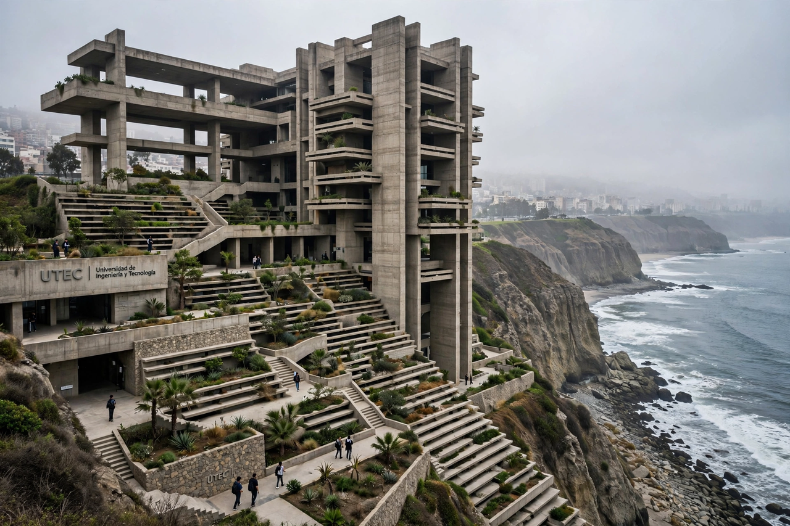

Yvonne Farrell
Yvonne Farrell (born 1951) is an Irish architect, co-founder with Shelley McNamara of Grafton Architects in Dublin. In 2020 Farrell and McNamara jointly received the Pritzker Architecture Prize, the first Irish citizens and among the first women to be so honoured, recognised for buildings that are "both respectful and new", generous to their cities and users. The pair also curated the 2018 Venice Biennale of Architecture.

| Born | 1951, Tullamore, County Offaly, Ireland |
|---|---|
| Nationality | Irish |
| Occupation | Architect |
| Practice | Grafton Architects |
| Awards | Pritzker Architecture Prize (2020); RIBA Royal Gold Medal (2020) |
| Notable works | UTEC Lima, Bocconi University, LSE Marshall Building |
Career
Farrell graduated from University College Dublin in 1974 and co-founded Grafton Architects in 1978 — the name borrowed from Grafton Street, Dublin, where the office first stood. For decades the practice worked mainly in Ireland on schools, housing, and civic buildings, while Farrell taught at UCD and lectured internationally.
International recognition came with the Luigi Bocconi University building in Milan (2008), which won the inaugural World Building of the Year award, and with the Universidad de Ingeniería y Tecnología (UTEC) campus in Lima, Peru (2015), a dramatic concrete "vertical campus" that won the first RIBA International Prize in 2016. Later works include the Institut Mines-Télécom in Paris and the Marshall Building for the London School of Economics.
Venice Biennale
Farrell and McNamara directed the 16th Venice Architecture Biennale in 2018 under the theme "Freespace", celebrating architecture's generosity of spirit and its capacity to provide free and additional spatial gifts to those who use it.
See also
References
- The Pritzker Architecture Prize — Yvonne Farrell and Shelley McNamara, 2020 laureates.
- Wainwright, Oliver, "Yvonne Farrell and Shelley McNamara win Pritzker prize", The Guardian, March 2020.